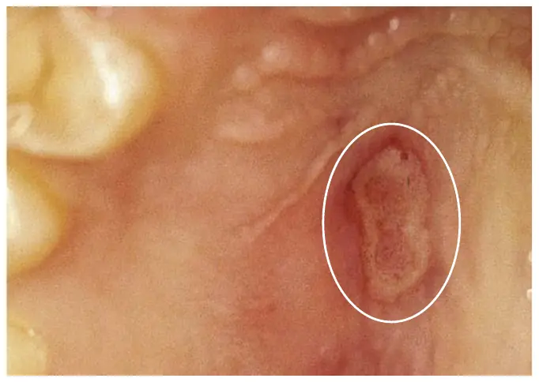
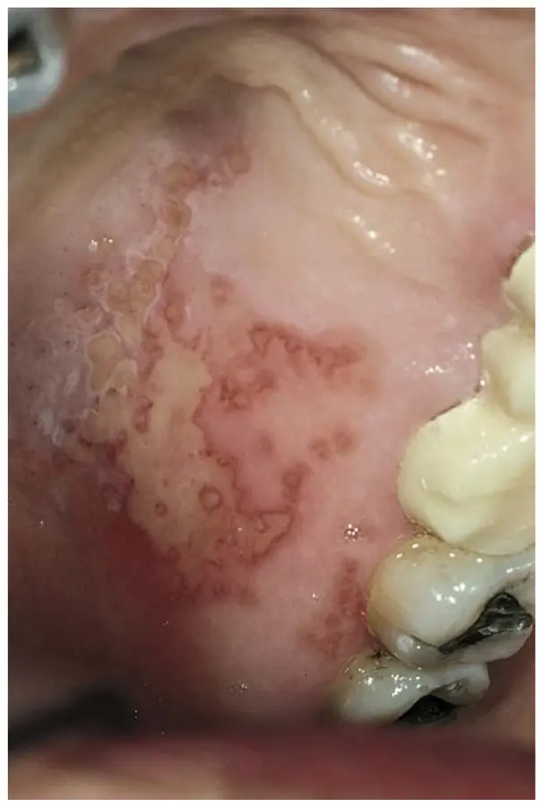

نسخه استخراجشده؛ ترجمه یا تأیید علمی انجام نشده است. وضعیت: captured
در جراحی پریوی سهساعتهی کام، هر بار که بافت دوباره صورتی شد، لیدوکائین با اپینفرین ۱:۵۰٬۰۰۰ در همان نقطه تزریق کردی. چند روز بعد بیمار با زخم دردناک در همان نقطه برمیگردد و میپرسد «عفونت کرده؟»

تحریک یا ایسکمی طولانی لثه دو عارضهی ناخوشایند میدهد:
هر دو ممکن است درد، گاهی شدید، بدهند. عفونت ثانویه فقط بهندرت پیش میآید.
معمولاً درمان خاصی لازم نیست و این را به بیمار اطمینان بده. برای درد، مسکن ضدالتهاب و پماد تریامسینولون دهانی روی محل. پوستهریزی در چند روز و آبسهی استریل در ۷ تا ۱۰ روز خوب میشود. ماجرا را در پرونده بنویس.
گاهی بیمار میگوید حدود ۲ روز پس از تزریق، دور محل تزریق زخمهای دردناک درآمده؛ نخستین نشانه درد است، اغلب شدید. این زخمها آفت راجعه یا هرپس سیمپلکساند که با ضربهی سوزن، محلول، سواب پنبهای، کلمپ رابردم یا توربین از حالت نهفته فعال شدهاند.

بیمار ممکن است گمان کند تزریق عفونت داده، ولی خطر عفونت ثانویه بسیار کم است. بگو عفونت باکتریایی نیست؛ بیشتر این بیماران پیشتر هم تجربهاش را داشتهاند.
اشتباه رایج: پماد تریامسینولون را، که برای آبسهی استریل مناسب است، روی این زخمها بگذاری. کورتیکواستروئید خطر درگیری ویروسی یا باکتریایی را بیشتر میکند؛ خمیر محافظ بدون تریامسینولون بهتر است.